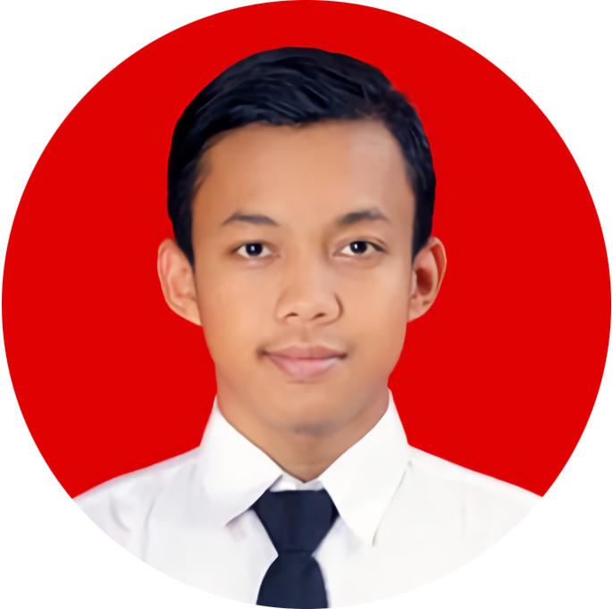

Mukhamad Jainur Kholis
Saya Mahasiswa dari Sekolah Tinggi Teknik Atlas Nusantara Malang. "Jangan hidup hanya berdasarkan apa kata orang. Sebagai mahasiswa kamu harus menjadi diri sendiri dan berani tampil berbeda melawan arus, bahkan ketika yang kamu lawan adalah kekuasaan."
Otniel Hamonangan
Saya dari Universitas Gunadarma. "Orang yang tak pernah membuat kesalahan adalah orang yang tidak pernah berbuat apa-apa."

Murfid Aufa Rachman
"Tanpa musik, hidup akan menjadi suatu kesalahan." Friedrich Nietzsche, Twilight of the Idols